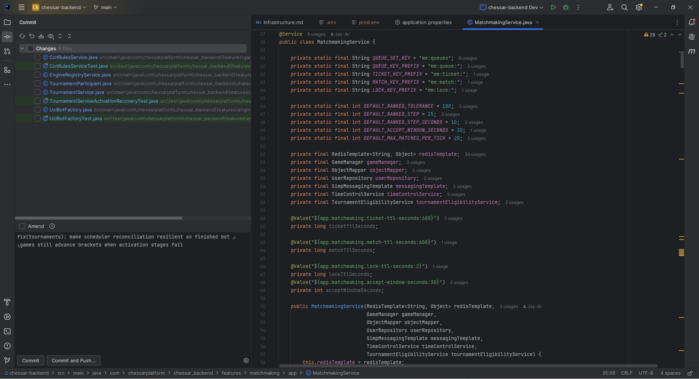

Where It Excels
High-quality refactors, rich code intelligence, and first-class branch/commit workflows inside one IDE.
Developer Tool Deep Dive
IntelliJ IDEA is JetBrains' full-featured IDE with integrated Git workflows, strong refactoring, and deep support for Java, Kotlin, and polyglot enterprise projects.
High-quality refactors, rich code intelligence, and first-class branch/commit workflows inside one IDE.
Heavier IDE footprint than lightweight editors, with paid Ultimate features for advanced enterprise stacks.
Strong fit for trunk-based and GitHub Flow when PR approvals and branch protections stay in the host.
Good companion to FlexDeploy build-once promotion flows while Git governance remains centralized in the host.

Developers branch, commit, and resolve merge changes without leaving coding context.
Teams prepare high-quality commit history locally, then hand off to host-enforced PR checks and approvals.
Developers quickly create rollback-history or forward-fix branches while deployment rollback stays in FlexDeploy.